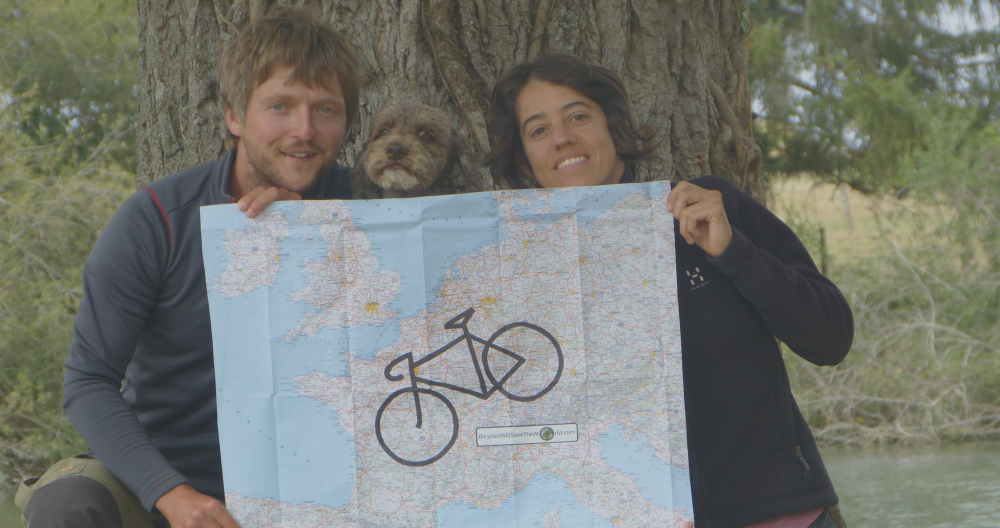
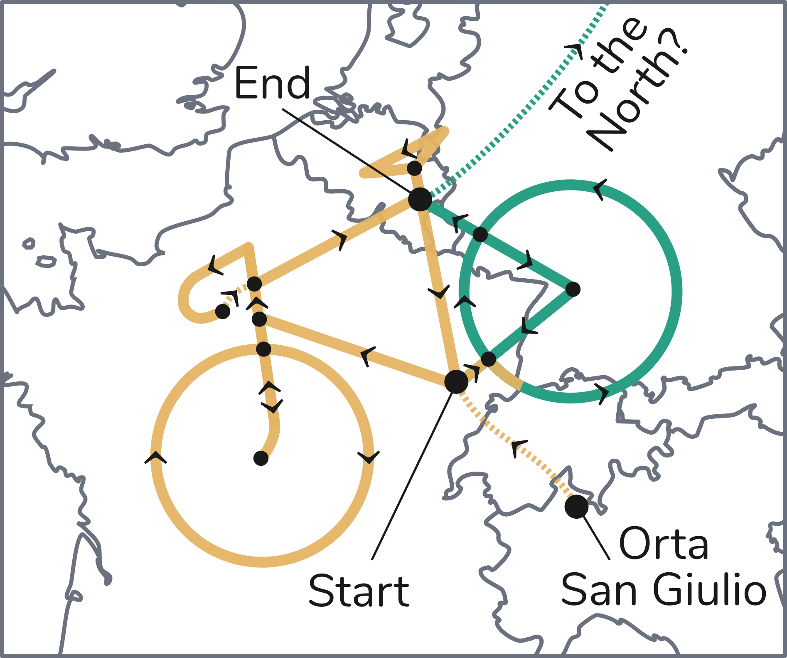

<section id="project">
  <div class="container">
    <div class="row border">
      <div class="col-md-12">

        <div id="project-slider" class="block slider">
          
          <div class="centered">
            <h1 class="text-uppercase">{{ page.title}}</h1>
            <br>
            {% if page.subtitle %}
            <h4>{{ page.subtitle }}</h4>
            {% endif %}
          </div>
        </div>
        <!--This code below is valid only for very small screens-->
        <div class="slider-below block">
          <h1 class="text-uppercase center-block" style="color:#E4B363;">{{ page.title}}</h1>
          <br>
          {% if page.subtitle %}
          <h4 class="center-block" style="color:#E4B363;">{{ page.subtitle }}</h4>
          {% endif %}
        </div> 
          
        <div id="project-text1" class="block">
          <p class="center-block">Simply put, our project is a crazy feat to raise awareness that we do not necessarily need to use a car to go about our daily business. Cars can be useful, and they are even essential for some of us, but statistics show that 50% of all car journeys within the EU cover less than 5 km</a>, and many of these could be undertaken on bike or foot.</p>         
          <br>
          <p class="center-block">As a reminder that transport alternatives to the car exist, we have cycled 7237 km to draw the shape of a huge bicycle across 7 countries of western Europe.</p>
          <br>
          <p class="center-block">We hope that our mad endeavour might motivate others to ditch their car in favour of the bicycle for daily transport needs. We sincerely believe that bicycles can take us a long way in our battle to tackle climate change and environmental breakdown.</p>
          <br>
          <p class="center-block">As a side note, with this project we have set an unofficial world record for the largest ever made GPS drawing (7237 km). We beat the previous record of 7163.67 km, which was obtained by multiple means of transport. We also beat the previous unofficial record for the biggest GPS drawing undertaken by bike, which was 4106 km. Far more importantly, we are quite happy to have drawn the biggest bicycle ever!</p>
        </div>
        
        <div id="project-map" class="block">
          <div class="iframe-container">
              <iframe src="https://www.google.com/maps/d/u/0/embed?mid=1tto3DsVqUGybPRRIhGxZgCiQQy2qNbp9&zoom=14&ll=48.769613572940884%2C5.250850468750059&z=5" width="900" height="550" frameborder="0" style="margin-top:-57px;margin-bottom:-22px;"" width="640" height="480"></iframe>
          </div>
        </div>
        
        <div id="project-text2-title" class="block">
          <h2 class="text-uppercase center-block">Some details of the journey</h2>
        </div>

        <div id="project-route"> 
          
        </div>
        
        <div id="project-text2">
          <p class="center-block">After selling our car, we left from Orta San Giulio (Italy) in July 2019, and we cycled some 550 km across the Swiss Alps to reach the starting point of the bicycle drawing, in the French village of Vy-lès-Lure. From there, we started tracing the bicycle shape following the directions indicated in the diagram.</p> 
          <br>
          <p class="center-block">We aimed to finish the drawing by the end of November 2019, but <a class="green" target="_blank"  href="forced-stop.html">things didn't quite go to plan</a>. One of us suffered from patellofemoral pain syndrome and had to take time off cycling to do physiotherapy. We set off again in November 2019 and managed to cycle until the end of December 2019, when we had to stop because of the cold and our unsuitable equipment. Since March 2020, we were prevented to travel due to the coronavirus lockdown measures.</p> 
          <br>
          <p class="center-block">We resumed cycling in June 2022 and completed the GPS drawing on the 9th of August 2022 in the Belgian village of Compogne. Overall, we were on the road for 131 days.</p>
          <br>
          <p class="center-block">The "drawing travellers" are <a class="green" target="_blank"  href="about-us.html">Arianna, Daniel, and Zola the dog</a>. While Daniel and Zola cycled on a custom cargo bike, Arianna used a more standard custom tourer. Both these bikes were built by Daniel, who has left academia for the workshop, where he is specialising in building bespoke cargo, touring, and city bikes (see his website at: <a class="green" target="_blank"  href="https://drkcycles.com">www.drkcycles.com</a>).</p>
        </div>
      <!-- Code below valid for screen size below 992px-->
        <div id="project-text2-small">
          <p class="center-block">After selling our car, we left from Orta San Giulio (Italy) in July 2019, and we cycled some 550 km across the Swiss Alps to reach the starting point of the bicycle drawing, in the French village of Vy-lès-Lure. From there, we started tracing the bicycle shape following the directions indicated in the diagram.</p> 
          <br>
          <p class="center-block">We aimed to finish the drawing by the end of November 2019, but <a class="green" target="_blank"  href="forced-stop.html">things didn't quite go to plan</a>. One of us suffered from patellofemoral pain syndrome and had to take time off cycling to do physiotherapy. We set off again in November 2019 and managed to cycle until the end of December 2019, when we had to stop because of the cold and our unsuitable equipment. Since March 2020, we were prevented to travel due to the coronavirus lockdown measures.</p> 
          <br>
          <p class="center-block">We resumed cycling in June 2022 and completed the GPS drawing on the 9th of August 2022 in the Belgian village of Compogne. Overall, we were on the road for 131 days.</p>   
          <br>
        </div>

        <div id="project-route-small"> 
          
        </div>

        <div id="project-text3-small">
          <p class="center-block">The "drawing travellers" are <a class="green" target="_blank"  href="about-us.html">Arianna, Daniel, and Zola the dog</a>. While Daniel and Zola cycled on a custom cargo bike, Arianna used a more standard custom tourer. Both these bikes were built by Daniel, who has left academia for the workshop, where he is specialising in building bespoke cargo, touring, and city bikes (see his website at: <a class="green" target="_blank"  href="https://drkcycles.com">www.drkcycles.com</a>).</p>
        </div>

    </div>
  </div>
</section>
    

  


